Chapter 1 Producing your first crime map
1.1 Introduction
This chapter introduces some basic concepts and will get you started to make some maps using R. We will learn how we can take regular crime data, and assign the appropriate geometry for our chosen unit of analysis. Spatial or environmental criminology works with data that often is discrete. In other scientific disciplines the mapped data is continuous (e.g., temperature) across the study surface. In environmental criminology, on the other hand, we mostly work with data represented by points (e.g., locations of a crime) or counts and rates of crimes within a particular geographical unit (e.g., a neigbourhoud, a census tract, a municipality, etc). Therefore in these first few chapters we will focus on ways to work with these kind of discrete data. Firstly, we will introduce the spatial and non-spatial R packages we will use frequently throughout the book, and learn some key terms around projection and coordinate reference systems which will be essential for subsequent chapters.
As we will discover throughout the book there are multiple R packages that have been developed to visualise spatial data. We will introduce the ones we feel are more important in different parts of the book. They all have advantages and disadvantages, but many offer similar functionality. Sometimes choosing one or the other is a matter of personal preference. In this chapter we will focus on map-making with ggplot2, a general package for all kinds of data visualisations (not just maps) based on the theory of the grammar of graphics. If you are not new to R, you may already be familiar with this package. Our intention in this chapter is to let you to quickly produce your first map. In subsequent chapters we will further refine their look and aesthetic appeal.
In this chapter we will use the following packages:
# Packages for reading data and data carpentry
library(readr)
library(tibble)
library(janitor)
library(dplyr)
# Packages for handling spatial data
library(sf)
# Packages for visualisation and mapping
library(ggplot2)
library(ggspatial)If you are a little rusty on R packages, what they do, how to install them, how to load them, and so on, please refer to Appendix A: LearnR for a quick introduction and overview of R.
1.2 Geospatial Perspective: key terms and ideas
Geospatial analysis provides a distinct perspective on the world, a unique lens through which to examine events, patterns, and processes that operate on or near the surface of our planet. Ultimately geospatial analysis concerns what happens where, and makes use of geographic information that links features and phenomena on the Earth’s surface to their locations.
We can talk about a few different concepts when it comes to spatial information. These are:
- Place
- Attributes
- Objects
1.2.1 Place
At the center of all spatial analysis is the concept of place. People identify with places of various sizes and shapes, from the parcel of land, to the neighbourhood, to the city, the country, the state or the nation state. Places often have names, and people use these to talk about and distinguish names. Names can be official or unofficial. Places also change continually as people move. In geospatial analysis, the basis of rigorous and precise definition of place is a coordinate system. A coordinate system is a set of measurements that allows place to be specified unambiguously and in a way that is meaningful across different users, analysts, mappers, researchers, and more.
In Environmental Criminology, place has acquired different meanings through history. The first geographical studies of crime during the XIX century looked at variation across provinces in France Guerry (1833), Belgium Quetelet (1842), and England Mayhew (1861). Later on, in the first decades of the XX century, the Chicago School of Sociology focused on the study of neighbourhoods (Park and Burgess (1925) Shaw and McKay (1942)). With the emergence of Environmental Criminology (Brantingham and Brantingham (1982) Cohen and Felson (1979) Cornish and Clarke (1986)) a shift towards a greater interest in microplaces, such as street segments or particular addresses, can be seen Eck and Weisburd (2015). Although an interest in variation across large administrative units (as “place”) remains within criminology, there has been a trend towards understanding place as particular locations, and focusing on risky places for crime .
However we define “place,” it is the central concept to crime mapping, and spatial data analysis. Most human activity takes place in a specific location, and accounting for this spatial information is a key task for criminologists, crime analysts, and social and data scientists more broadly.
1.2.2 Attributes
Attribute has become the preferred term for any recorded characteristic or property of a place. It is what more generally in statistics we may call a variable and in data science a feature. A place’s name is an obvious example of an attribute. But there can be other pieces of information, such as number of crimes in a neighbourhood, or the GDP of a country. Within geographic information science (GIS) the term ‘attributes’ usually refers to records in a data table associated with individual elements in a vector map, or cells in a grid in a raster or image file. These data behave exactly as data you have encountered in your past experience with non-spatial statistics. The rows represent observations, and the columns represent variables. The variables can be have different levels of measurement (like numeric (interval or ratio, discrete or continuous) or categorical(binary, nominal, ordinal)), and depending on what they are, you can apply different methods to making sense of them. The difference with other kind of data table is that the observations, your rows, correspond to places or locations and that the data necessarily will include elements that allow us to place it in a map.
1.2.3 Spatial objects
In spatial analysis it is customary to refer to places as objects. These objects can be a whole country, or a road. In forestry, the objects of interest might be trees, and their location will be represented as points. On the other hand, studies of social or economic patterns may need to consider the two-dimensional extent of places, which will therefore be represented as areas. These representations of the world are part of what is called the vector data model: A representation of the world using points, lines, and polygons. Vector models are useful for storing data that have discrete boundaries, such as country borders, land parcels, and streets. This is made up of points, lines, and areas (polygons):
- Points
- *Points are pairs of coordinates, in latitude/longitude or some other standard system. In the context of crime analysis, the typical point we work with, though not the only one, represents the specific location of a criminal event. These points form patterns we explore and analyse.
- Lines
- Lines are ordered sequences of points connected by straight lines.
- Areas (polygons)
- Areas are ordered rings of points, also connected by straight lines to form polygons. It can contain holes, or be linked with separate islands. Areas can represent neighbourhouds, police districts, municipal terms, etc. You may come across the term lattice data to denote the type of data we work with when we observed attributes of areas and want to explore and analyse this data.
Spatial objects may also be stored as raster data. Raster data are made up of pixels (or cells), and each cell has an associated value. Simplifying slightly, a digital photograph is an example of a raster dataset where each pixel value corresponds to a particular colour. In GIS, the pixel values usually represent continuous data such as elevation above sea level, or chemical concentrations, or rainfall, etc. The key point is that all of this data is represented as a grid of (usually square or hexagonal) cells.
1.2.4 Networks
We already mentioned lines that constitute objects of spatial data, such as streets, roads, railroads, etc. Networks constitute one-dimensional structures embedded in two or three dimensions. Discrete point objects may be distributed on the network, representing phenomena such as landmarks, or observation points. Mathematically, a network forms a graph, and many techniques developed for graphs have application to networks. These include various ways of measuring a network’s connectivity, or of finding the shortest path between pairs of points on a network.
1.2.5 Maps and their types
Historically maps have been the primary means to store and communicate spatial data. Objects and their attributes can be readily depicted, and the human eye can quickly discern patterns and anomalies in a well-designed map.
In GIS we distinguish between reference and thematic maps. A reference map places the emphasis on the location of spatial objects such as cities, mountains, rivers, parks, etc. You use these maps to orient yourself in space and find out the location of particular places.
Thematic maps or statistical maps, on the other hand, are used to represent the spatial distribution of attributes or statistics. For example, the number of crimes across different neighbourhouds. Our focus in this book is on thematic maps, but often when producing thematic maps you may use a reference map as a backdrop, as a basemap, to help interpretation and to provide context. In this and subsequent chapters we will introduce different types of thematic maps.
Another useful distinction is between static and interactive maps. Your traditional printed road map is an example of a static map, whereas the web application Google maps is an example of an interactive map. In an interactive map you can zoom in and out, you can select and query information about objects in an interactive fashion, etc. In this chapter we introduce the R package ggplot2, which excels at static maps. In other chapters we will introduce another package called leaflet, which is particularly useful for interactive purposes, and the package tmap, in which we can shift our maps between static and interactive mode.
1.2.6 Map projections and geographic coordinate systems
Whenever we put something into a map we need some sort of system to pinpoint the location. A coordinate system allows you to integrate any dataset with other geographical datasets within a common framework. With the help of coordinate reference systems (CRS) every place on the earth can be specified by a set of three numbers, called coordinates. In general CRS can be divided into projected coordinate reference systems (also called Cartesian or rectangular coordinate reference systems) and geographic coordinate reference systems.
A geographic coordinate system is a three dimensional reference system that enables you to locate any location on earth. Often this is done with longitude, latitude and elevation. The use of geographic coordinate reference systems is very common. They use degrees of latitude and longitude and sometimes also a height value to describe a location on the earth’s surface. The most popular is called WGS 84. This is the one you will most likely be using, and if you get your data in latitude and longitude, then this is the CRS you are working in. It is also possible that you will be using a projected CRS. This two-dimensional coordinate reference system is commonly defined by two axes. At right angles to each other, they form a so called XY-plane. The horizontal axis is normally labeled X, and the vertical axis is normally labeled Y.
Projected coordinate systems or map projections, on the other hand, try to portray the surface of the earth or a portion of the earth on a two dimensional flat piece of paper or computer screen.
All projections of a sphere like the Earth in a two-dimensional map involve some sort of distortion. You can’t fit a three dimensional object into two dimensions without doing so. Projections differ to a large extent on the kind of distortion that they introduce. The decision as to which map projection and coordinate reference system to use, depends on the regional extent of the area you want to work in, on the analysis you want to do and often on the availability of data. Knowing the system you use would allow you to translate your data into other systems whenever this may be necessary. Often you may have to integrate data that is provided to you in different coordinate or projected systems. As long as you know the systems, you can do this, and we will be demonstrating this throughout the book.
Working, for example, with data in the UK, you are most likely to be using British National Grid (BNG). The Ordnance Survey National Grid reference system is a system of geographic grid references used in Great Britain, different from using Latitude and Longitude. In this case, points will be defined by “Easting” and “Northing” rather than “Longitude” and “Latitude.” It basically divides the UK into a series of squares, and uses references to these to locate something. The most common usage is the six figure grid reference, employing three digits in each coordinate to determine a 100 m square. For example, the grid reference of the 100 m square containing the summit of Ben Nevis is NN 166 712.
This will be important later on when we are linking data from different projections, or when you look at your map and you try to figure out why it might look “squished.”
You will often see the notation epsg when referring to different coordinate systems. This refers to the EPSG registry or EPSG Geodetic Parameter Dataset. It is a collection of geodetic datums, spatial reference systems, earth ellipsoids, coordinate transformations, and related units of measurement. All standard coordinate systems will have one of these codes assigned to it. So, for example, the WGS84 coordinate system corresponds the epsg key 4326, whereas the British National Grid has the key 27700. Having this common framework to identify projections make things much easier when we want to change our data from one system to another. You can query the website https://epsg.io/ for the different keys and information associated to each of them. This EPSG dataset was originally developed by the European Petroleum Survey Group (EPSG), thus the name.
1.2.7 Summary
While the above was a whistlestop tour of some key terms, this should start you thinking about these concepts. For a deeper understanding, consult the further reading at the end of this chapter. For now, to progress, be sure that you are confident to know about:
- Spatial objects - what they are and how they are represented,
- Attributes - the bits of information that belong to your spatial objects,
- Maps and projections - especially what geographic versus projected coordinates mean, and why it’s important that you know what CRS your data have.
1.3 Getting started with crime data
We live in a world awash with data and through this book we will use the different examples to show you some useful places and sources you can use to obtain your spatial data. Most geographically referenced crime data is based on crime reported to the police, although there are some notable exceptions (e.g., public health data on violence, geocoded victim survey data, etc.). Many police departments across the world make this data readily available to the public or researchers. This is more common in places like the United States, where crime mapping applications first got established, but increasingly we see publicly available crime data from other countries as well.
For our first map we will use data from the UK, which can be downloaded from the police.uk website. We have downloaded some data for crime in Manchester, which is included in the data file you have downloaded to follow along (see the Preamble chapter for details). If you wanted to acquire the data yourself directly from the source, you could open the data.police.uk/data website and then choose the data tab, in order to manually download some data. After selecting a data range, a police force, and the type of data, one could generate a file. This would take you to a download page, where you have to click the Download now button. This will open a dialogue to save a .zip file. After all this pointing and clicking, one would have to unzip the file and read it into R.
So whether from the website, or the provided data file, you should have some police data ready. The next step is to read this into R. How can we do this? We say, “hello R, i would like to create a new object please and I will call this new object my_data.” We do this by typing the name we are giving the object and the assignment function <-. Then on the right hand side of the assignment function, there is the value that we are assigning the variable. So it could be a bit of text, or it could be some function, for example when you read a csv file with the read_csv() function from the readr package.
When we read in this file, inside the function, we also need to specify where to read the csv from. Where should R look to find this data? This is where normally you are putting in the path to your file. Something like:
my_data <- read_csv("path to my file here")If you downloaded the data following the steps in the preamble chapter for this book, your data will be in your working directory, in a sub-folder called “data.” It is within this subfolder that you’ll find all you need. In this case, let’s look for the file 2019-06-greater-manchester-street.csv. To read this into R we run:
library(readr)
crimes <- read_csv("data/2019-06-greater-manchester-street.csv")If you look at the Environment window in the top right corner of RStudio you should see now a new object that contains a tibble, a particular format for dataframes, and that is called crimes. It will tell you how many observations (rows - and incidentally the number of recorded crimes in June 2019 within the GMP jurisdiction) and how many variables (columns) your data has.
Let’s have a look at the crimes dataframe with the View() function. This will open the data browser in RStudio
View(crimes)If you rather just want your results in the console, you can use the glimpse() function from the tibble package. This function does just that, it gives you a quick glimpse of the first few cases in the dataframe. Notice that there are two columns (Longitude and Latitude) that provide the require geographical coordinates that we need to plot this data.
library(tibble)
glimpse(crimes)## Rows: 32,058
## Columns: 12
## $ `Crime ID` <chr> NA, "aa1cc4cb0c436f463635890bcb4ff2cba08f59925…
## $ Month <chr> "2019-06", "2019-06", "2019-06", "2019-06", "2…
## $ `Reported by` <chr> "Greater Manchester Police", "Greater Manchest…
## $ `Falls within` <chr> "Greater Manchester Police", "Greater Manchest…
## $ Longitude <dbl> -2.464422, -2.441166, -2.444807, -2.444807, -2…
## $ Latitude <dbl> 53.61250, 53.61604, 53.61151, 53.61151, 53.606…
## $ Location <chr> "On or near Parking Area", "On or near Pitcomb…
## $ `LSOA code` <chr> "E01004768", "E01004768", "E01004768", "E01004…
## $ `LSOA name` <chr> "Bolton 001A", "Bolton 001A", "Bolton 001A", "…
## $ `Crime type` <chr> "Anti-social behaviour", "Violence and sexual …
## $ `Last outcome category` <chr> NA, "Unable to prosecute suspect", "Unable to …
## $ Context <lgl> NA, NA, NA, NA, NA, NA, NA, NA, NA, NA, NA, NA…You may notice that a lot of the variable names are messy in that they have a space in them - this can cause issues, so before playing around too much with the data we want to clean this up. Luckily there is a very handy package you can use for this called janitor which contains the function clean_names().
library(janitor)
crimes <- clean_names(crimes)Now the names are much neater. You can print them all for a view using the names() function:
names(crimes)## [1] "crime_id" "month" "reported_by"
## [4] "falls_within" "longitude" "latitude"
## [7] "location" "lsoa_code" "lsoa_name"
## [10] "crime_type" "last_outcome_category" "context"1.4 From dataframes to spatial objects
Having had a chance to inspect the data set you’ve downloaded, let’s consider what sort of spatial information we might be able to use. If you have a look at the column names, what are some of the variables which you think might have some spatial component? Have a think about each column, and how you think it may help to put these crimes on the map.
There are a few answers here. In fact there are one each to map onto point, line, and polygon, which we read about earlier.
1.4.1 The point
First, and possibly most obvious, are the coordinates provided with each crime incident recorded. You can find this in the two columns - Longitude and Latitude. These two column help put each crime incident on a specific point on a map. For example, let’s take the very first crime incident. Here we use the head() function and specify that we want the first 1 rows only with n=1 parameter.
head(crimes, n = 1)You can see that the values are for Longitude and for Latitude. These two numbers allow us to put this point on a map.
1.4.2 The line
Another column which contains information about where the crime happened is the aptly named location variable. This shows you a list of locations related to where the crimes happened. You may see a few values such as on or near XYZ street. Let’s look again at the first entry.
You can see that the value is this isn’t great, as we might struggle to identify which parking area… Some other ones are more useful, let’s look at the last entry for example with the tail() function.
tail(crimes, n = 1)You can see that the value is . This makes our crime much easier to find, we just need to locate where is . We might have a file of lines of all the roads of Manchester, and if we did, we can link the crime to that particular road, in order to map it.
1.4.3 The polygon
What more? You may also have seen the column “lsoa_name” seems to have some spatial component, Let’s have a look at the first crime again. You see the value for LSOA name is - Bolton we know is a Borough of Greater Manchester, but what is the 001 for ?
Well, it denotes a particular geographical sub-unit within the municipality of Bolton called a Lower Layer Super Output Area. This is a unit of UK Census Geography. The basic unit for Census Geography in the UK is an ‘Output area’ - this is the resolution at which we can access data from the UK Census. The Output Area (OA) is therefore the smallest unit we could use. The census in other countries use different names for the units for which they publish information, but the logic is similar.
There are 181,408 OAs, 34,753 lower layer super output areas (LSOA) and 7,201 middle layer super output areas (MSOA) in England and Wales. The neat thing about these Census geographies is the idea is that they don’t change much from census to census (unlike other administrative boundaries) and in the UK case were created with statistical analysis in mind (they were designed to be as homogeneous as possible). The less neat thing is that although we use them to operationalise the concept of neighbourhood a lot, they may not bear much resemblance to what residents might think of as their neighbourhood. This is a common problem in the UK and elsewhere (that has been widely discussed in the literature) when relying on census units as our proxy for community or neighbourhood, but one that is hard to escape from, for these units are those at which key demographic variable is typically sourced and published.
Anyway back to our crime data. You see we have two columns that reference LSOAs, lsoa_name and lsoa_code. We can use these to link our crime data to a file containing the geometries needed to put the crime data on the map.
1.5 The simple features framework
So how can we use these spatial details in our dataset to put our crimes on the map? We need to somehow specify a geometry for our data, which links each unit of analysis (whether that is the point, line, or polygon) to a relevant geographical representation, which allows us to put this thing on the map.
How you add geographical information will vary with the type of information we have, but in all of these, we will use the simple features framework. What are simple features? sf package author Edzer Pebesma describes simple features as a standardized way of encoding spatial vector data (points, lines, polygons) in computers (we will return to this concept next chapter). The sf package is an R package for reading, writing, handling, and manipulating simple features in R, implementing the vector (points, lines, polygons) data handling functionality.
Traditionally spatial analysis in R were done using the sp package which creates a particular way of storing spatial objects in R. When most packages for spatial data analysis in R and for thematic cartography were first developed sp was the only way to work with spatial data in R. There are more than 450 packages that rely on sp, making it an important part of the R ecosystem. More recently sf is changing the way that R does spatial analysis. This package provides a new way of storing spatial objects in R and most recent R packages for spatial analysis and cartography are using it as the new default. It is easy to transform sf objects into sp objects and viceversa, so that those packages that still don’t use this new format can be used. But in this book we will emphasise the use of sf whenever possible. You can read more about the history of spatial packages and the sf package in the first two chapters of Lovelace, Nowosad, and Muenchow (2019).
Features can be thought of as “things” or objects that have a spatial location or extent; they may be physical objects like a building, or social conventions like a political state. Feature geometry refers to the spatial properties (location or extent) of a feature, and can be described by a point, a point set, a linestring, a set of linestrings, a polygon, a set of polygons, or a combination of these. The simple adjective of simple features refers to the property that linestrings and polygons are built from points connected by straight line segments. Features typically also have other properties (temporal properties, color, name, measured quantity), which are called feature attributes. For more detailed insight we recommend reading Pebesma (2018).
Let’s get started with making some maps using sf. First, make sure you install the package, and then load with library() function. We know that we have two columns one for Longitude and one for Latitude, which pinpoint each crime event to a specific point, close to where it happened. Not quite where it happened, as the data are anonymised (more on this later), but for our purposes here, we can assume this is the location of the crime. To map these points, we can transform our ordinary dataframe into a simple features object.
To do so, we can use the st_as_sf() function from sf, into which we need to specify what we are to transform (our dataframe), where the spatial data can be found (our columns which hold the latitude and longitude information), and also what coordinate reference system the object has (see above our discussion about projections and coordinate reference systems).
Latitude longitude coordinates specify location on the WGS 84 CRS. We can tell R that this is our CRS of choice by including its EPSG identifier (see https://en.wikipedia.org/wiki/EPSG_Geodetic_Parameter_Dataset) as a parameter in our function. It is handy to know the more common EPSG identifiers. For example, for WGS84 the EPSG identifier is 4326. For British National Grid, the identifier is 27700.
Putting it all together in practice, we can create a simple features object from our dataframe using the latitude and longitude columns:
library(sf)
crimes_sf <- st_as_sf(crimes, #dataframe
#columns with coordinates:
coords = c("longitude", "latitude"),
crs = 4326) #crs is WGS84We can see that this is now a simple features object using the genericclass() function the we see the result “sf”:
class(crimes_sf)## [1] "sf" "tbl_df" "tbl" "data.frame"You might also notice something else that is different between “crimes” and “crimes_sf.” Have a look at the dimension (hint: look in your ‘Environment’ tab). In the sf object you will see that the information provided by the longitude and latitude variables have been “merged” into a new variable called geometry, that sf uses to store the kind of object we have (a point in this case) and where to locate it.
1.6 Plotting data with ggplot2
Now that we have this sf object, how can we map it? We mentioned before about the graphical package ggplot2. We can use this, and its syntax, in order to map spatial data using the geom_sf() geometry.
First, a quick refresher on ggplot2 and the grammar of graphics. The grammar of graphics upon which this package is based on defines various components of a graphic. Some of the most important are:
-The data: For using ggplot2 the data has to be stored as a data frame or tibble (sf objects are of class tibble).
-The geoms: They describe the objects that represent the data (e.g., points, lines, polygons, etc..). This is what gets drawn. And you can have various different types layered over each other in the same visualisation.
-The aesthetics: They describe the visual characteristics that represent data (e.g., position, size, colour, shape, transparency).
-Facets: They describe how data is split into subsets and displayed as multiple small graphs.
-Stats: They describe statistical transformations that typically summarise data.
Let’s take it one step at the time.
Essentially the philosophy behind this is that all graphics are made up of layers. You can build every graph from the same few components: a data set, a set of geoms—visual marks that represent data points, and a coordinate system.
Take this example from our crimes dataframe.
You have a table such as:
| crime_type | n |
|---|---|
| Robbery | 463 |
| Shoplifting | 1479 |
| Theft from the person | 718 |
You then want to plot this. To do so, you want to create a plot that combines the following layers:
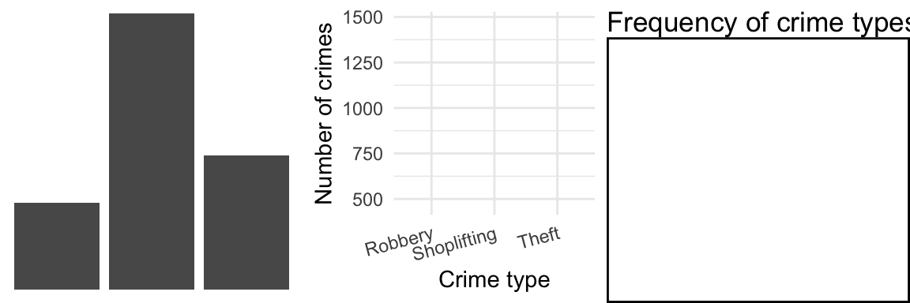
This will result in a final plot:
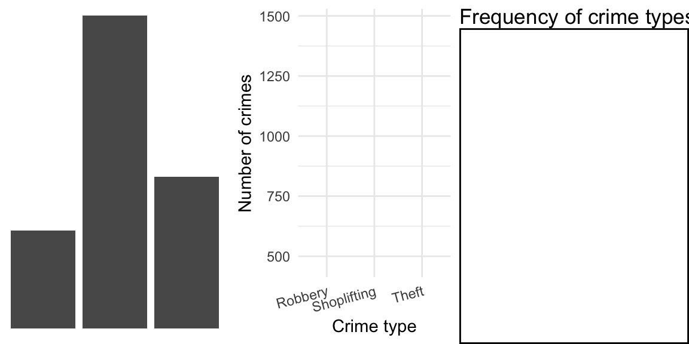
Taking our crime data as an example, we would build up our plot as follows.
First let’s create a small illustrative data set of only the crimes of “Robbery,” “Shoplifting,” and “Theft from the person.”
library(dplyr)
df <- crimes %>%
filter(crime_type %in% c("Robbery",
"Shoplifting",
"Theft from the person")
) %>%
group_by(crime_type) %>%
count()
df## # A tibble: 3 x 2
## # Groups: crime_type [3]
## crime_type n
## <chr> <int>
## 1 Robbery 463
## 2 Shoplifting 1479
## 3 Theft from the person 718Now let us add the layers to our ggplot object.
First, the data layer:
library(ggplot2)
ggplot(df, aes(x = crime_type, y = n))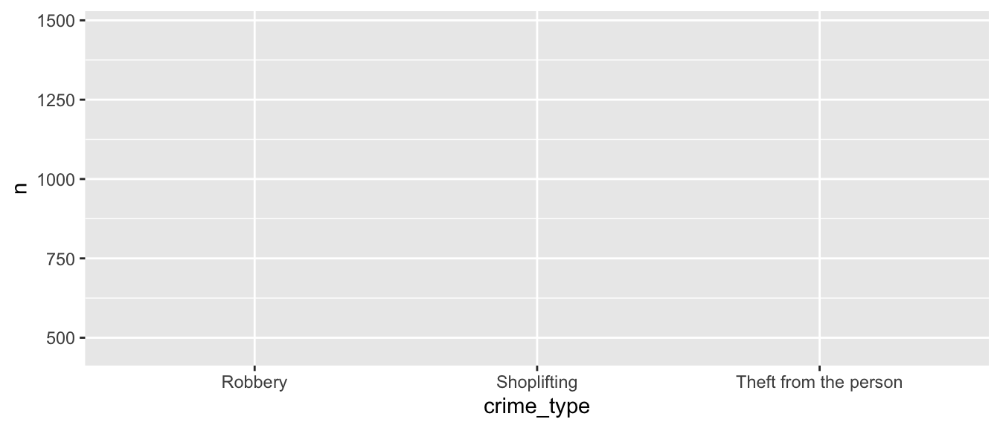
Then add the geometry (in this case, geom_col()):
ggplot(df, aes(x = crime_type, y = n)) +
geom_col()Then our annotations:
ggplot(df, aes(x = crime_type, y = n)) +
geom_col() +
labs(title = "Frequency of crime types") +
xlab("Crime type") +
ylab("Number of crimes")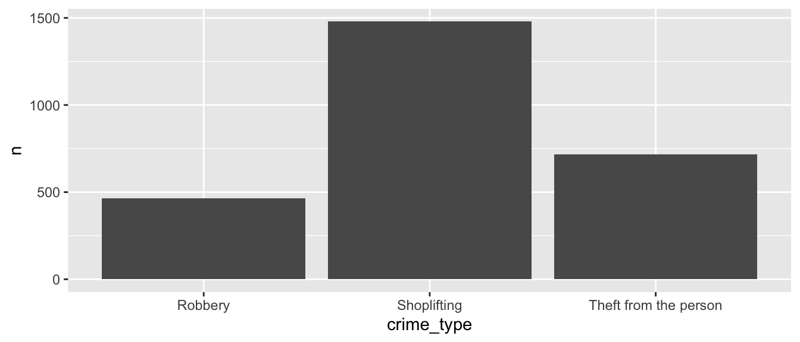
We can also specify our themes, by using a custom theme such as theme_minimal(), and by adding our own specifications within an additional theme() function:
ggplot(df, aes(x = crime_type, y = n)) +
geom_col() +
labs(title = "Frequency of crime types") +
xlab("Crime type") +
ylab("Number of crimes") +
theme_minimal() +
theme(axis.text.x = element_text(angle = 15, hjust = 1),
panel.border = element_rect(colour = "black", fill=NA, size=1))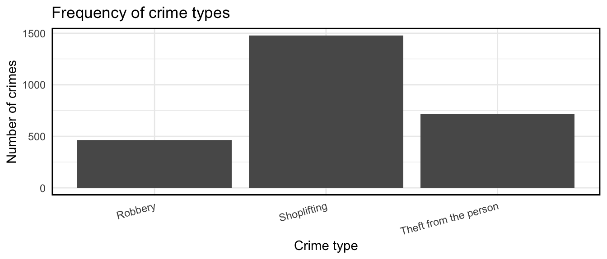
We can add further specifications within the aes() (aesthetics) function, where we add additional layers from our data, to represent even more information in our charts, for example the outcomes for each crime.
# create new dataframe (df) including last_outcome_category variable
df <- crimes %>%
filter(crime_type %in% c("Robbery",
"Shoplifting",
"Theft from the person")
) %>%
group_by(crime_type, last_outcome_category) %>%
count()
# plot including new variable with fill= parameter in aes() function
ggplot(df, aes(x = crime_type, y = n, fill = last_outcome_category)) +
geom_col() +
labs(title = "Frequency of crime types") +
xlab("Crime type") +
ylab("Number of crimes") +
theme_minimal() +
theme(axis.text.x = element_text(angle = 15,
hjust = 1),
panel.border = element_rect(colour = "black",
fill=NA,
size=1)
)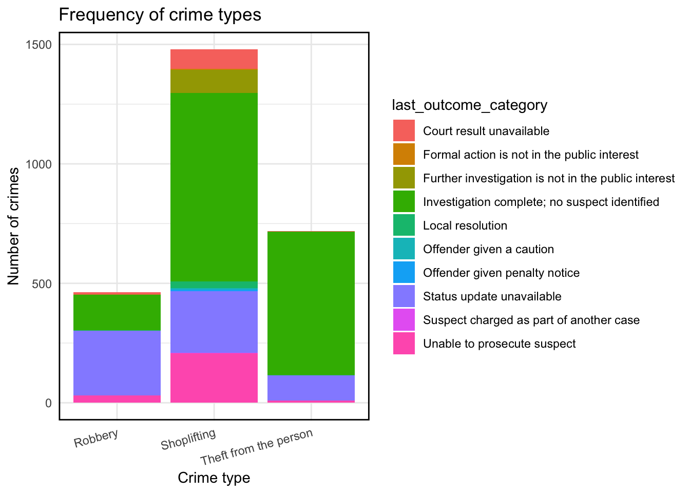
We can be explicit about the colours we want to use with the function scale_fill_brewer(), which we can also use to rename our legend. Don’t worry too much at this point about where the palette comes from, in the chapter on cargography we will discuss colour in more detail.
ggplot(df, aes(x = crime_type, y = n, fill = last_outcome_category)) +
geom_col() +
labs(title = "Frequency of crime types") +
xlab("Crime type") +
ylab("Number of crimes") +
theme_minimal() +
theme(axis.text.x = element_text(angle = 15,
hjust = 1),
panel.border = element_rect(colour = "black",
fill=NA,
size=1)
) +
scale_fill_brewer(type = "qual", palette = 3, name = "Outcome")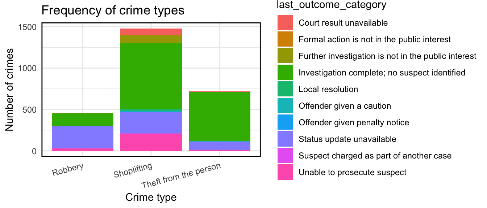
There are many many more options. While this here is not the greatest graph you’ll ever see, it illustrates the process of building up your graphics the ggplot way. Do read up on ggplot2 for example in Wickham and Grolemund (2017). In later chapters, we will talk more about visualisation, colour choice, and more!
1.7 Mapping crime data as points
So how can we use this for spatial data? We can use the geom_sf() function to do so. Using geom_sf is slightly different to other geometries, for example how we used geom_col() above. First we initiate the plot with the ggplot() function but don’t include the data in there. Instead, it is in the geometry where we add the data. And second we don’t need to specify the mapping of x and y. Since this is in the geometry column of our spatial object. Like so:
ggplot() +
geom_sf(data = crimes_sf)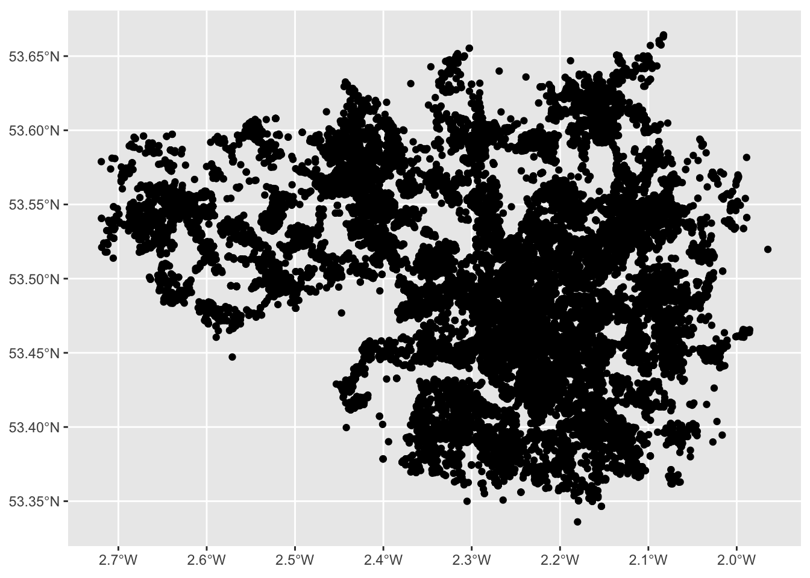
And here we have a map of each point in our data set, each recorded crime in June 2019 in Greater Manchester.
Would you call this a map though? While it is presenting spatial data, there is not a lot of meaning being communicated. Point maps generally can be messy and their uses are specific to certain situations and cases, usually when you have fewer points, but here, these points are especially devoid of any meaning, as they are floating in a graph grid. So let’s give it a basemap.
We can do this by adding a layer to our graph object. Specifically we will use the annotation_map_tile() from the ggspatial package. This provides us with a static Open Street Map layer behind our data, giving it (some) more context. Remember to load the package (and install if you haven’t already). And then use the annotation_map_tile() function, making sure to place it before the geom_sf points layer, so the background map is placed first, and the points on top of that:
library(ggspatial)
ggplot() +
annotation_map_tile() +
geom_sf(data = crimes_sf)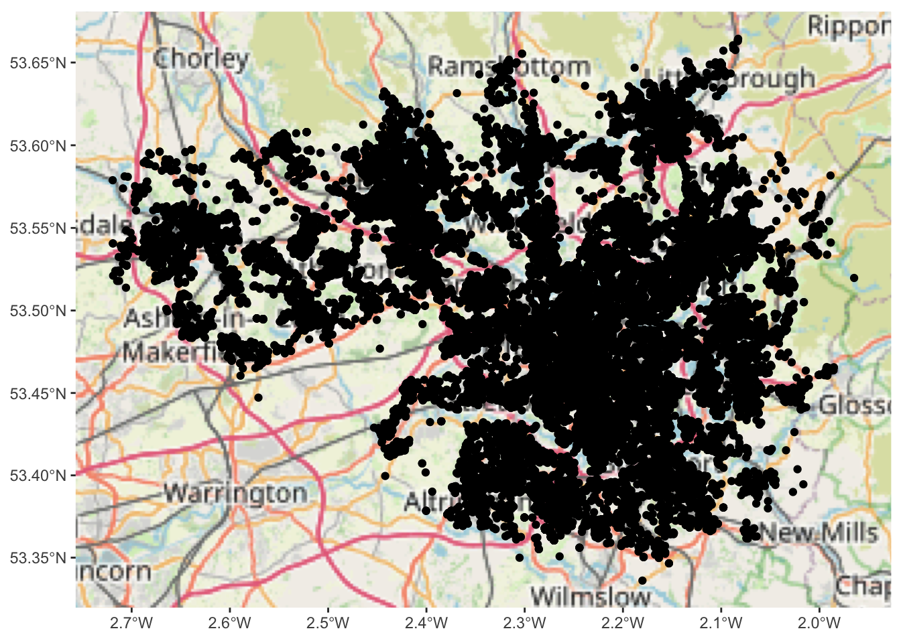
So what you see above behind the points is what we can call a basemap. The term basemap is seen often in GIS and refers to a collection of GIS data and/or orthorectified imagery that form the background setting for a map. The function of the basemap is to provide background detail necessary to orient the location of the map. Basemaps also add to the aesthetic appeal of a map. Basemaps are essentially reference maps that may give us context and help with the interpretation. You can see above that you are seeing the Open Street Map Basemap. This is one option but there are others.
Let’s leave out points for now, and move on to how we might map our lines and polygons.
1.8 Mapping crime data as polygons
What about our other two columns, location, and LSOAs? Well to put these on the map, we need a geometry representation of them. We need boundary data representing the areas we want to map put. We will learn in this section where you may find these, how to download them, turn them into sf objects, and how to link your data to them to be able to map them.
1.8.1 Finding boundary data
In this section you are going to learn how you take one of the most popular data formats for spatial objects, the shapefile, and read it into R. The shapefile was introduced by ESRI, the developers and vendors or ArcGIS. And although many other formats have developed since and ESRI no longer holds the same market position it once occupied (though they’re still the player to beat), shapefiles continue to be one of the most popular formats you will encounter in your work. You can read more about shapefiles in Wikipedia (https://en.wikipedia.org/wiki/Shapefile).
We are going to learn here how to obtain shapefiles for British census geographies. For this activity we will focus on the polygon (the LSOA) rather than the lines of the streets, but the logic is more or less the same.
Census boundary data are a digitised representation of the underlying geography of the census. Census Geography is often used in research and spatial analysis because it is divided into units based on population counts, created to form comparable units, rather than other administrative boundaries such as wards or police force areas. However depending on your research question and the context for your analysis, you might be using different units.
The hierarchy of the census geographies in the UK goes from Country to Local Authority to Middle Layer Super Output Area (MSOA) to Lower Layer Super Output Area (LSOA) to Output Area (in other countries you have similar levels in the census hierarchies):
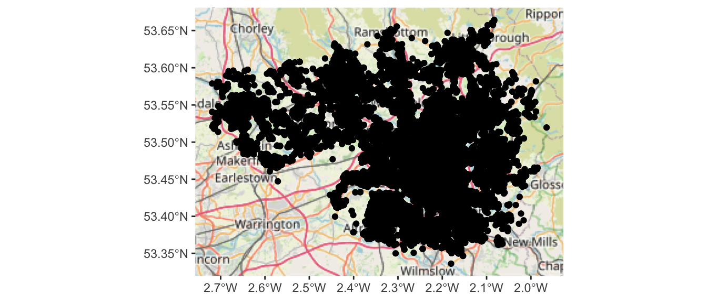
Here we will get some boundaries for Manchester. Let’s use the LSOA level, so that we can link back to our crime data easily. These are geographical regions designed to be more stable over time and consistent in size than existing administrative and political boundaries. LSOAs comprise, on average, 600 households that are combined on the basis of spatial proximity and homogeneity of dwelling type and tenure.
To get some boundary data, you can use the UK Data Service website. There is a simple Boundary Data Selector tool which you could use. Other countries also have such repositories, and in some cases where they do not, other resources, such as Open Street Map, or natural earth (and associated R package rnaturalearth) can be handy resources. In Appendix C “Sourcing geographical data for crime analysis” we elaborate more on these, with some examples.
For now, you can turn to the data folder which you have downloaded from this book’s repository. (If unsure, refer to the “Preamble” section!).
Specifically, we’re looking for a folder called BoundaryData. When we download a shapefile, we usually get many files, and a folder which contains them all. It is important for these files to be kept together, in the same folder. If you have a look inside thie BoundaryData folder, you will notice that there are 4 files with the same name “england_lsoa_2011.” NOTE AGAIN: It is important that you keep all these files in the same location as each other! They all contain different bits of information about your shapefile (and they are all needed):
- .shp — shape format; the feature geometry itself - this is what you see on the map
- .shx — shape index format; a positional index of the feature geometry to allow seeking forwards and backwards quickly
- .dbf — attribute format; columnar attributes for each shape, in dBase IV format.
- .prj — projection format; the coordinate system and projection information, a plain text file describing the projection using well-known text format
Sometimes there might be more files associated with your shapefile as well, but we will not cover them here. So unlike when you work with spreadsheets and data in tabular form, which typically is just all included in one file; when you work with shapefiles, you have to live with the required information living in separate files that need to be stored together. So, being tidy and organised is even more important when you carry out projects that involve spatial data.
1.8.2 Reading shapefiles into R
To read in your data into R, you will need to know the path to where you have saved it. Ideally this will be in your data folder in your project directory.
Let’s create an object and assign it our shapefile’s name:
# Remember to use the appropriate pathfile in your case
shp_name <- "data/BoundaryData/england_lsoa_2011.shp"Make sure that this is saved in your working directory, and you have set your working directory.
Now use the st_read() function from the sf package to read in the shapefile:
manchester_lsoa <- st_read(shp_name)Now you have your spatial data file. Notice how running the function sends to the console some metadata about your data. You have a polygon, with 282 rows, and the CRS is the projected British National Grid. You can have a look at what sort of data it contains, the same way you would view a dataframe, with the View() function:
View(manchester_lsoa)## Rows: 282
## Columns: 4
## $ label <chr> "E08000003E02001062E01005066", "E08000003E02001092E01005073",…
## $ name <chr> "Manchester 018E", "Manchester 048C", "Manchester 018A", "Man…
## $ code <chr> "E01005066", "E01005073", "E01005061", "E01005062", "E0100506…
## $ geometry <POLYGON [m]> POLYGON ((384850 397432, 38..., POLYGON ((382221.1 38…And of course, since it’s spatial data, you can map it using the geom_sf() function, as we did with our points:
ggplot() +
geom_sf(data = manchester_lsoa)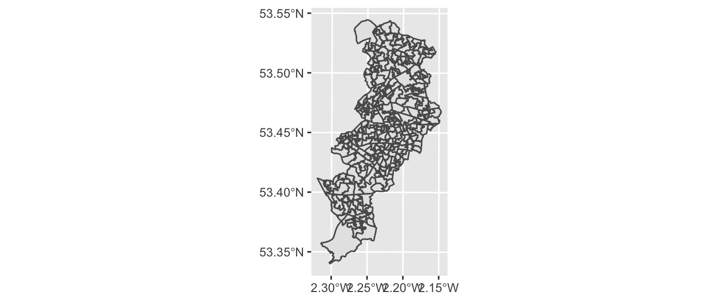
Great, we now have an outline of the LSOAs in Manchester. Notice how the shape is different to that of the points in our crime data since here we only obtained the data for the city of Manchester (Manchester Local Authority) rather than for the whole metropolitan area - and which includes all the other local authorities aside from Manchester city as well.
1.8.3 Data wrangling with dplyr
In order to map crimes to LSOAs we might want to take a step back and think about unit of analysis at which our data are collected. In our original dataframe of crimes, we saw that each crime incident is one row. So the unit of analysis is each crime. Since we were looking to map each crime at the location it happened, we used the latitude and longitude supplied with each one, and this supplied a geometry each for each crime type. However, when we are looking to map our data to LSOA level, we need to match the crime data to the geometry we wish to display.
Have a look at the “manchester_lsoa” object we mapped above. How many rows (observations) does it have? You can check this by looking in the Environment pane, or by using the nrow() function.
nrow(manchester_lsoa)You can see this has 282 rows. This means we have geometries for 282 LSOAs. On the other hand, our crimes dataframe has 32058 rows, one for each crime (observation). So how can we match these up? The answer lies in thinking about what it is that our map using LSOAs as our unit of analysis will be able to tell us. Think of other maps of areas - what are they usually telling you? Usually we expect to see crimes per neighbourhood - something like this. So our unit of analysis needs to be LSOA, and for each one we need to know how many crimes occurred in that area.
To achieve this, we will wrangle our data using functions from the dplyr package. This is a package for conducting all sorts of operations with data frames. We are not going to cover the full functionality of dplyr (which you can consult in the dplyr vignette (https://cran.r-project.org/web/packages/dplyr/vignettes/dplyr.html)), but we are going to cover three different very useful elements of dplyr: the select function, the group_by function, and the piping operator.
The select() function provides you with a simple way of subsetting columns from a data frame. So, say we just want to use one variable, “lsoa_code,” from the “crimes” dataframe and store it in a new object we could write the following code. This variable tell us the LSOA in which the crime took place and it is essential if we want to group our crimes by LSOA (by using this standard method of merging information from datasets):
new_object <- select(crimes, lsoa_code)We can also use the group_by() function for performing group operations. Essentially this function ask R to group cases within categories and then do something with those grouped cases. So, say, we want to count the number of cases within each LSOA, we could use the following code:
#First we group the cases by LSOA code and
# store this organised data into a new object
grouped_crimes <- group_by(new_object, lsoa_code)
#Then we count the number of cases within each category
# using the summarise function to print the results
summarise(grouped_crimes, count = n())
#We create a new dataframe with these results
crime_per_LSOA <- summarise(grouped_crimes, count = n())As you can see we can do what we wanted, create a new dataframe with the required info, but if we do this we are creating many objects that we don’t need, one at each step. Instead there is a more efficient way of doing this, without so many intermediate steps clogging up our environment with unnecessary objects. That’s where the piping operator comes handy. The piping operator is written like %>% and it can be read as “and then.” Look at the code below:
#First we say create a new object called crime_per_lsoa,
# and then select only the LSOA.code column to exist in this object,
# and then group this object by the LSOA.code,
# and then count the number of cases within each category.
# This is what I want in the new object.
crimes_per_lsoa <- crimes %>%
group_by(lsoa_code) %>%
summarise(count=n())Essentially we obtain the same results but with more streamlined and elegant code, and not needing additional objects in our environment.
And now we have a new object, “crimes_per_lsoa” if we have a look at this one, we can now see what each row represents one LSOA, and next to it we have a variable for the number of crimes from each area. We created a new dataframe from a frequency table, and as each row of the crimes data was one crime, the frequency table tells us the number of crimes which occurred in each LSOA.
Those of you playing close attention might note that there are still more observations in this dataframe (1671) than in the “manchester_lsoas” one (282). Again, this is because “crimes_per_lsoa” also includes data from census areas in municipalities of the metropolitan area of Greater of Manchester other than Manchester city.
1.8.4 Join data to sf object
Our next task is to link our crimes data to our sf spatial object to help us map this. Notice anything similar between the data from the shapefile and the frequency table data we just created? Do they share a column?
Yes! You might notice that the “lsoa_code” field in the crimes data matches the values in the “code” field in the spatial data. In theory we could join these two data tables.
So how do we do this? Well what you can do is to link one data set with another. Data linking is used to bring together information from different sources in order to create a new, richer dataset. This involves identifying and combining information from corresponding records on each of the different source datasets. The records in the resulting linked dataset contain some data from each of the source datasets. Most linking techniques combine records from different datasets if they refer to the same entity (an entity may be a person, organisation, household or even a geographic region.)
You can merge (combine) rows from one table into another just by pasting them in the first empty cells below the target table—the table grows in size to include the new rows. And if the rows in both tables match up, you can merge columns from one table with another by pasting them in the first empty cells to the right of the table—again, the table grows, this time to include the new columns.
Merging rows is pretty straightforward, but merging columns can be tricky if the rows of one table don’t always line up with the rows in the other table. By using left_join() from the dplyr package, you can avoid some of the alignment problems.
left_join() will return all rows from \(x\), and all columns from \(x\) and \(y\). Rows in \(x\) with no match in \(y\) will have NA values in the new columns. If there are multiple matches between \(x\) and \(y\), all combinations of the matches are returned.
So we’ve already identified that both our crimes data, and the spatial data contain a column with matching values, the codes for the LSOA that each row represents.
You need a unique identifier to be present for each row in all the data sets that you wish to join. This is how R knows what values belong to what row. What you are doing is matching each value from one table to the next, using this unique identified column, that exists in both tables. For example, let’s say we have two data sets from some people in Hawkins, Indiana. In one data set we collected information about their age. In another one, we collected information about their hair colour. If we collected some information that is unique to each observation, and this is the same in both sets of data, for example their names, then we can link them up, based on this information. Something like this:
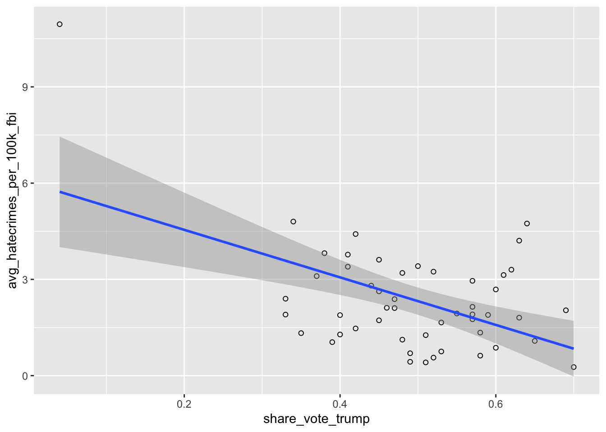
And by doing so, we produce a final table that contains all values, lined up correctly for each individual observation, like this:
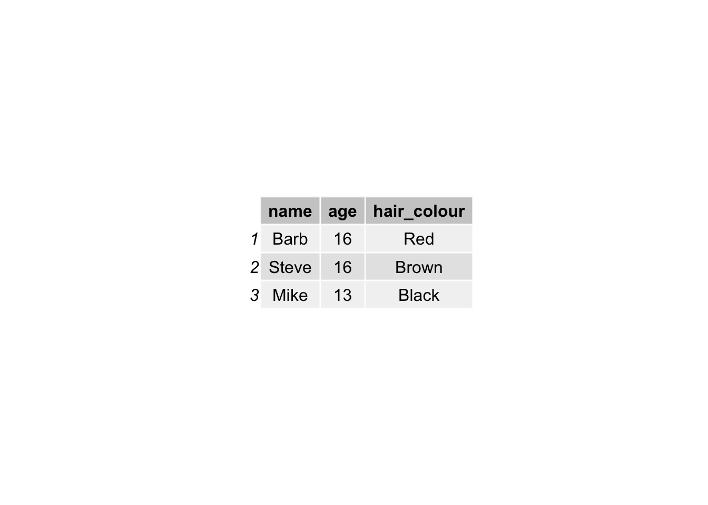
This is all we are doing, when merging tables, is we are making use that we line up the correct value for all the variables, for all our observations.
Why are we using left join though? There is a whole family of join functions as part of dplyr (http://stat545.com/bit001_dplyr-cheatsheet.html) which join data sets. There is also a right_join(), and an inner_join() and an outer_join() and a full_join(). But here we use left_join(), because that way we keep all the rows in x (the left-hand side dataframe), and join to it all the matched columns in y (the right-hand side dataframe).
So let’s join the crimes data to the spatial data, using left_join(). We have to tell the function what are the dataframes we want to join, as well as the names of the columns that contain the matching values in each one. This is “code” in the “manchester_lsoa” dataframe and “lsoa_code” in the “crimes_per_lsoa” dataframe. Like so:
manchester_lsoa <- left_join(manchester_lsoa, crimes_per_lsoa,
by = c("code"="lsoa_code"))Now if you have a look at the data again, you will see that the column of number of crimes (count) has been added on.
You may not want to have to go through this process all the time you want to work with this data. One thing you could do is to save the “manchester_lsoa” object as a physical file in your machine. You can use the st_write() function from the sf package to do this. If we want to write into a shapefile format we would do as shown below. Make sure you save this file, for we will come back to it in subsequent chapters.
st_write(manchester_lsoa,
"data/BoundaryData/manchester_crime_lsoa.shp")1.8.5 Putting polygon data on the map
Now that we have joined the crimes data to the geometry, you can use this to make our map!
Remember our original empty map? Well now, since we have the column (variable) for number of crimes here, we can use that to share the polygons based on how many crimes there are in each LSOA. We can do this by specifying the fill= parameter of the geom_sf function.
ggplot() +
geom_sf(data = manchester_lsoa, aes(fill = count))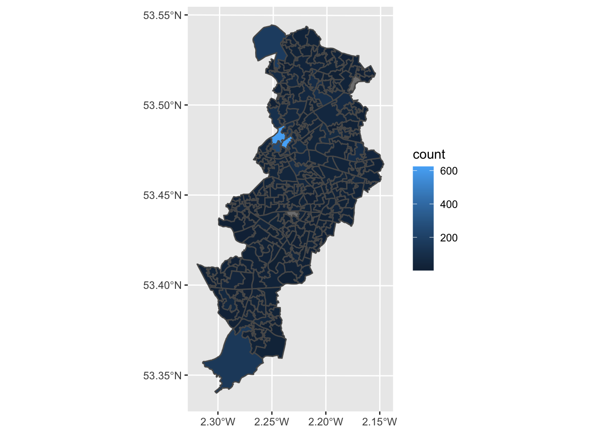
We can adjust the opacity of our thematic map, with the alpha = parameter, add a basemap, with the function annotation_map_tile() and adjust the colour scheme, with the scale_fill_gradient2() function.
ggplot() +
annotation_map_tile() + # add basemap
geom_sf(data = manchester_lsoa,
aes(fill = count),
alpha = 0.7) + # alpha sets the opacity
#use scale_fill_gradient2() for a different palette
# and name the variable on the legend
scale_fill_gradient2(name ="Number of crimes") 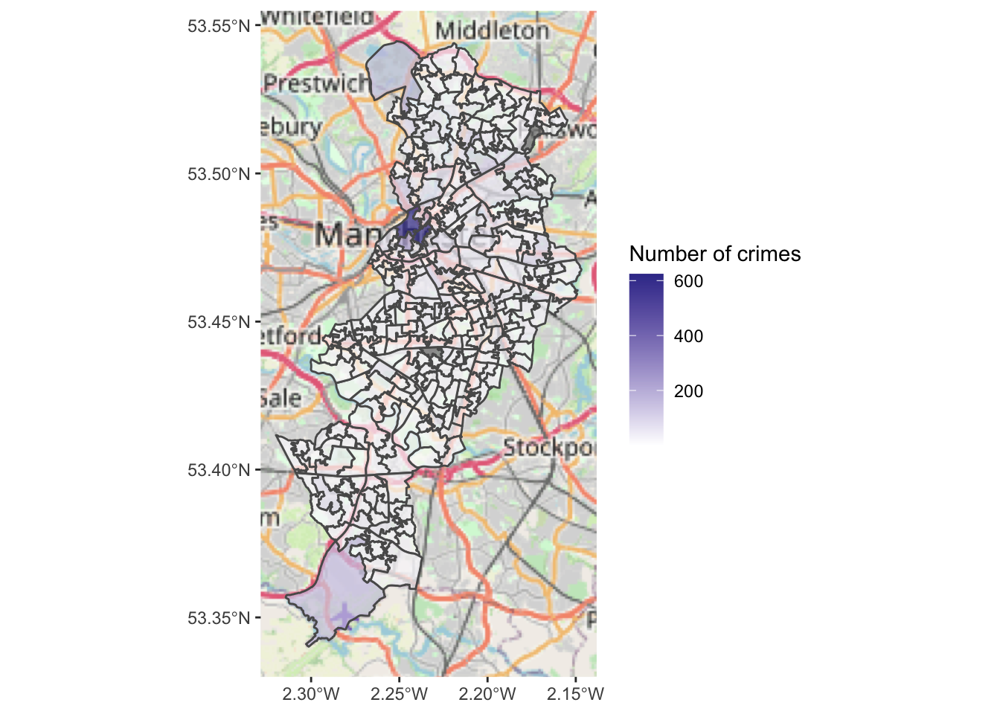
In subsequent chapters we will play around with other packages in R that you can use to produce this kind of maps and gradually we will discuss the kind of choices you can make in order to select the adequate type of representation for the type of spatial data and question you have, and the aesthethic choices that are adequate depending on the purposes and medium in which you will publish your map. But for now, we can rejoice, here is our very first crime map of the book!
1.9 Summary and further reading
In this chapter we had a play around with some regular old crime data and discovered how we can use the sf package in R to assign it a geometry (both at point and polygon level), and how that can help us visualise our results. We covered some very important concepts such as projections and coordinate reference systems, and we had a play at acquiring shapefiles which can help us visualise our data. We had a think about units of analysis, and how that will affect how we visualise our data. In the next chapter we will spend a bit of more time discussing how to make good choices when producing maps.
There are a number of introductory texts to geographic information systems and analysis that provide adequate background to some of the key concepts we introduce in this chapter (O´Sullivan and Unwin (2010), Bolstad (2019)). The report by Harries (1999) produced for the National Institute of Justice still provides a good general introduction for basic ideas around crime mapping and CAN be accessed for free online. Chapter 3 of Spatial and Approach (2020) offers invaluable observations on the nature of spatial and spatial-temporal attribute data, often using examples from crime research. From a more domain-knowledge point of view, the early chapters of Santos (2013) and Chainey and Rattcliffe (2005) set the stage for the use of GIS as part of the crime analysis process, whereas Bruinsma and Johnson (2018) edited handbook provides an excellent introduction to environmental criminology (that provides the theoretical and empirical backbone to spatial analysis of crime). Finally, Healy (2019) provides a general introduction to data visualisation with R using the ggplot2 package. Although Healy´s text is not just about mapping, it offers a very practical and helpful introduction to using ggplot2 where you can learn how to further customise your maps and other charts.
This is a book about maps and spatial analysis, but clearly one of the first questions you need to ask yourself is whether producing a map is the right answer to your question. Just because your data is spatial doesn’t mean you need a map for every question you pose to this data. There may be other forms of data visualisation that are more appropriate for exploring and summarising the story you want to tell with your data. If you are uncertain about whether you need a map or other kind of plot books such as Cairo (2016), Camoes (2016), or Schwabish (2021) provide useful guidance. For specifics of ggplot2 refer to Wickham (2010)